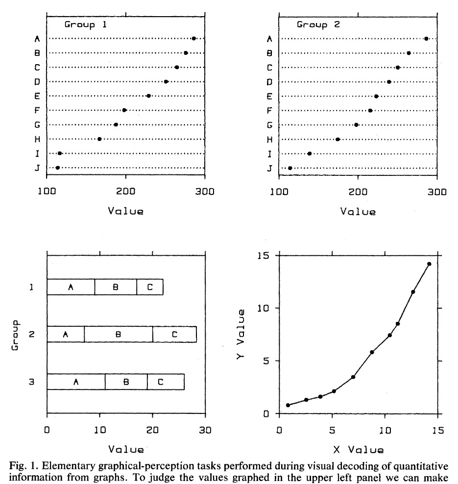
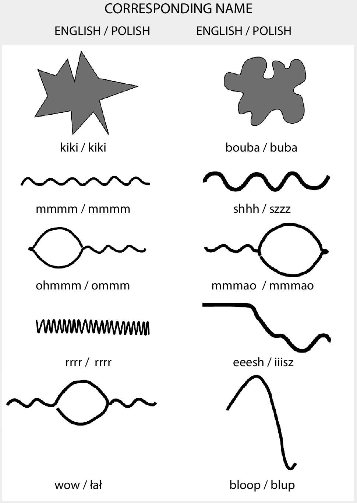

Data Science Basics in R, Day 4
Visualizing and communicating about data
Goals for today
- How to create data visualizations
- Plan
- Design
- Build
Creating a data visualization
Steps:
- Plan
- Design
- Build
- Refine
Planning
- Who
- What
- When
- Where
- Why
Why: What are your goals?
- Identify the purpose of the graph
- deliver a message?
- explore a topic?
- support a decision?
What: What are the data and evidence?
- Understand your data
- type of data
- volume of data
- Understand the evidence
- what do the data say?
Who: Who is the audience
specialists? non-specialists?
Where:
Adapt the design to space or formatting constraints - clinical report? - poster? - slide deck? - publication? - dashboard?
When: How much time do you want to invest?
Designing
Choosing a plot type
Visual elements
Cleveland McGill Scale
- In 1985 study of how humans understand plots

Cleveland McGill Scale
- In 1985 study of how humans understand plots
- How accurately are people were able to interpret data?
Cleveland McGill Scale
- In 1985 study of how humans understand plots
- How accurately are people were able to interpret data?
- Experimented: asked subjects to guess data from graphics
Cleveland McGill Scale
- In 1985 study of how humans understand plots
- How accurately are people were able to interpret data?
- Experimented: asked subjects to guess data from graphics
- Varied plot design and details: position, shape, size, symbols, color
Cleveland McGill Scale
- In 1985 study of how humans understand plots
- How accurately are people were able to interpret data?
- Experimented: asked subjects to guess data from graphics
- Varied plot design and details: position, shape, size, symbols, color
- Ranked most-to-least interpretable visual elements
Cleveland McGill Scale Ranking
- #1 Position
- #2 Length
- #3 Angle and slope
- #4 Color saturation
- #5 Color hue
- For more information and complete rankings, see original publication
Bouba/kiki effect
Which is kiki, and which is bouba?
Bouba/kiki effect
- First observed in 1924 by a Georgian psychologist
- How do people understand and interpret shapes, sounds, and words?
- Participants given a list with nonsense words to match with shapes
- Users consistently grouped certains words and shapes together
Bouba/kiki effect
Position
- Do not plot log-normally distributed variables on a linear scale
Shape
- Use position for comparisons rather than length (e.g., dots instead of bars), especially for non-linear scales
Color
- Use color intentionally
- existing or branded color palettes
Building
Refining
Refining a data visualization
Three principles
- Purpose: Have a well-defined purpose
- Clarity: Show the data clearly
- Message: Make the message obvious
Simplify
- Simplify where possible
- Use less ink and more white space
- Avoid unnecessary clutter (like unnecessary gridlines)
Meaningful tiles and labels
- Chose a meaningful title
Minimize eye movement
- place labels next to data
- draw attention to the main points
Make comparisons easy
- Make comparisons easy
- use visual grouping (common shapes, colors, regions)
- order values in a meaningful way
- judgements are easier to make on a horizontal (vs. vertical) scale – need citation
- consider reference lines
Understand existing conventions
These may vary from field to field - Cause on x-axis, effect on y-axis
Technical details
Choosing a plot type
Selecting colors
Playing with fonts
Dashboards
What is a dashboard?
A dashboard is a visual display of the most important information needed to achieve one or more objectives which fits entirely on a single computer screen, so it can be monitored at a glance.
A brief history
- 1980s early ‘executive information systems’ developed by vendors
- 1990s focus on key performance indicators (KPIs) in business
- 2000s over half of surveyed companies use dashboards
Types of dashboards

Purpose of dashboards
- strategic: provide a quick overview that decision-makers need to monitor the performance of an organization and to inform long-term strategic direction
- simple display mechanisms
- data often daily, weekly, or monthly (vs. real-time)
-dashboards for analytical purposes
-dashboards for operational purposes
Common dashboard tools
Where to learn more
R Basics
Data visualization
Open access books - Data Visualization: A practical introduction - Hands on Data Vizualization - Fundamentals of Data Visualization - ggplot2: Elegant Graphics for Data Analysis
Other readings or videos - Journal of the Data Vizualization Society - Multiple Views on Medium - How Humans See Data
Examples - Our World in Data - R Graph Gallery - Portfolios: Cedtric Scherer
Colors
Other readings or videos - Your Friendly Guide to Colors in Data Visualisation - What to consider when choosing colors for data visualization
Choosing your color palette - Color palettes in R
Data science
Open access books - R for Data Science
Other readings or videos
Statistical Learning/Machine learning
Open access books
Other readings or videos
Python
Open access books
Other readings or videos
SQL
Open access books
Other readings or videos